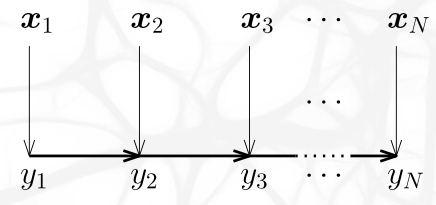
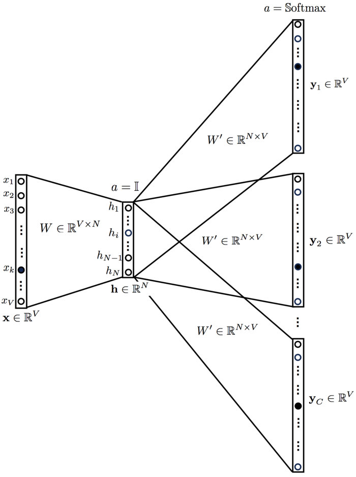

Considering a linear-chain CRF, write down how a score of a label sequence \(y\) is defined, and how can a log probability be computed using the label sequence scores. [5]
Linear-chain CRF je lineární graf, ve kterém hrany definují závislosti mezi prvky výstupní sekvence.

Skóre nějaké výstupní sekvence \(y\) v závislosti na vstupu \(X\) se počítá jako součet pravděpodobnosti jednotlivých labelů \(f(y_i | X)\) a přechodů mezi nimi \(A_{y_{i-1} y_i}\). \[ s(\boldsymbol{X}, \boldsymbol{y} ; \boldsymbol{\theta}, \boldsymbol{A})=\sum_{i=1}^{N}\left(\boldsymbol{A}_{y_{i-1}, y_{i}}+f_{\boldsymbol{\theta}}\left(y_{i} \mid \boldsymbol{X}\right)\right) \] Jakmile spočteme skóre, můžeme vypočítat pravděpodobnost celé “věty” \(y\) pomocí softmaxu. Cross entropii této vzniklé distribuce poté spočítáme zlogaritmováním této pravděpodobnosti: \[ \log p(\boldsymbol{y} \mid \boldsymbol{X})=s(\boldsymbol{X}, \boldsymbol{y})-\operatorname{logsumexp}_{\boldsymbol{z} \in Y^{N}}(s(\boldsymbol{X}, \boldsymbol{z})) \]
Write down the dynamic programming algorithm for computing log probability of a linear-chain CRF, including its asymptotic complexity. [10]
Když do sebe zanořuji logsumexpy, logy a expy se vyruší, takže z toho nakonec vznikne jeden velký logsumexp se sumami uvniř. Proto je také \[
\operatorname{logsumexp}_{k=1}^{Y}\left(\alpha_{N}(k)\right) = \operatorname{logsumexp}_{z \in Y^N}(s(z)),
\] kde \(\alpha_t(k)\) označuje log-pravděpodobnost sekvence dlouhé \(t\) a končící na $k \[
\alpha_{t}(k)=f_{\boldsymbol{\theta}}\left(y_{t}=k \mid \boldsymbol{X}\right)+\operatorname{logsumexp}_{j \in Y}\left(\alpha_{t-1}(j)+\boldsymbol{A}_{j, k}\right)
\]
Write down the dynamic programming algorithm for linear-chain CRF decoding, i.e., an algorithm computing the most probable label sequence \(y\). [10]
Algoritmus je stejný jako výše, pouze místo logsumexpů se použije max. Také musíme sledovat, kde bylo maxima dosaženo.
In the context of CTC loss, describe regular and extended labelings and write down an algorithm for computing the log probability of a gold label sequence \(y\). [10]
Regular labeling je labeling s délkou \(\leq\) délka vstupní sekvence. Síť ale generuje extended labeling, který má stejnou délku, a obsahuje speciální znak \(blank\). Regulární labeling můžeme vyrobit z extended tím, že spojíme shodné sousední znaky a poté vymažeme blanky.
Pro nějakou sekvenci \(y\) definujeme \(\alpha^t(s)\) jako pravděpodobnost, že prvních \(t\) kroků sítě vygenerovalo prvních \(s\) znaků sekvence \(y\), \[ \alpha^{t}(s) \stackrel{\text { def }}{=} \sum_{\begin{array}{c} \text { extended } \\ \text { labelings } \boldsymbol{\pi}: \\ \mathcal{B}\left(\boldsymbol{\pi}_{1: t}\right)=\boldsymbol{y}_{1: s} \end{array}} \prod_{t^{\prime}=1}^{t} p_{\boldsymbol{\pi}_{t^{\prime}}}^{t^{\prime}} \] Toto \(\alpha^t(s)\) se dá vypočítat jako součet \(\alpha^t_-(s)\), které označuje, že vygenerovaná sekvence \(\pi\) končí na blank, a \(\alpha^t_*(s)\), která označuje, že \(\pi\) na blank nekončí. Inicializujeme \[ \begin{array}{l} \alpha_{-}^{1}(0) \leftarrow p_{-}^{1} \\ \alpha_{*}^{1}(1) \leftarrow p_{y_{1}}^{1} \end{array} \] a provedeme indukční krok \[ \begin{array}{l} \alpha_{-}^{t}(s) \leftarrow p_{-}^{t}\left(\alpha_{*}^{t-1}(s)+\alpha_{-}^{t-1}(s)\right) \\ \alpha_{*}^{t}(s) \leftarrow\left\{\begin{array}{l} p_{y_{s}}^{t}\left(\alpha_{*}^{t-1}(s)+\alpha_{-}^{t-1}(s-1)+\alpha_{*}^{t-1}(s-1)\right), \text { if } y_{s} \neq y_{s-1} \\ p_{y_{s}}^{t}\left(\alpha_{*}^{t-1}(s)+\alpha_{-}^{t-1}(s-1)\right), \text { if } y_{s}=y_{s-1} \end{array}\right. \end{array} \] V druhém případě je nutné uvažovat, zda v mé extended \(\pi\) je znak \(\pi_s\) stejný jako \(\pi_{s-1}\) — pokud ano, tak \(\alpha^{t-1}\) musí vygenerovat celých \(s\) znaků, jinak by mu stačilo vygenerovat \(s-1\), protože ten \(s\)-tý jsem vygeneroval teď v čase \(t\).
Reálně to pak celé bude zlogaritmováno, tj. místo násobení bude \(+\) a místo \(+\) budou logsumexpy.
Describe how are CTC predictions performed using a beam-search. [5]
Obecně si v kroce \(t\) si nechám \(k\) nejlepších regulárních labelingů, které umím vygenerovat v \(t\) krocích (tj. z extended labelingu délky \(t\)). Uloženy mám i jejich \(\alpha^t(y)\), tj. součet jejich pravděpodobností napříč extended labelingy.
Draw the CBOW architecture from
word2vec, including the sizes of the inputs and the sizes of the outputs and used non-linearities. Also make sure to indicate where are the embeddings being trained. [5]
Embedding je matice \(W_{V\times N}\). Za output vrstvou je Softmax, který rozhoduje, které že slovo bylo v díře mezi těmi vstupními.

Draw the SkipGram architecture from
word2vec, including the sizes of the inputs and the sizes of the outputs and used non-linearities. Also make sure to indicate where are the embeddings being trained. [5]
Aktivace je opět softmax, embeddingem je opět matice \(W_{V\times N}\). Z jednoho slova predikujeme jeho kontext.

Describe the hierarchical softmax used in
word2vec. [5]
Ze tříd (tj. ze slov) postavím binární strom, místo jedné klasifikace do \(k\) tříd udělám \(hloubka \in O(\log k)\) binárních klasifikací. Pokud pak slovo \(w\) ve stromě odpovídá cestě \(n_1, n_2, \ldots, n_L\), poté \[ p_{\mathrm{HS}}\left(w \mid w_{i}\right) \stackrel{\mathrm{def}}{=} \prod_{j=1}^{L-1} \sigma\left(\left[+1 \text { if } n_{j+1} \text { is right child else }-1\right] \cdot \boldsymbol{W}_{n_{j}}^{\top} \boldsymbol{V}_{w_{i}}\right) \] Tohle má sice špatnou accuracy, ale nám to nevadí, protože embeddingy vzniknou hezké.
Describe the negative sampling proposed in
word2vec, including the choice of distribution of negative samples. [5]
\[ l_{\mathrm{NEG}}\left(w_{o}, w_{i}\right) \stackrel{\text { def }}{=} \log \sigma\left(\boldsymbol{W}_{w_{o}}^{\top} \boldsymbol{V}_{w_{i}}\right)+\sum_{j=1}^{k} \mathbb{E}_{w_{j} \sim P(w)} \log \left(1-\sigma\left(\boldsymbol{W}_{w_{j}}^{\top} \boldsymbol{V}_{w_{i}}\right)\right) \]
Slova samplujeme z unigramového rozdělení \(U(w)^{3/4}\), což je rozdělení slov, kterém jim přiděluje pravděpodobnost podle počtu jejich výskytů v korpusu.